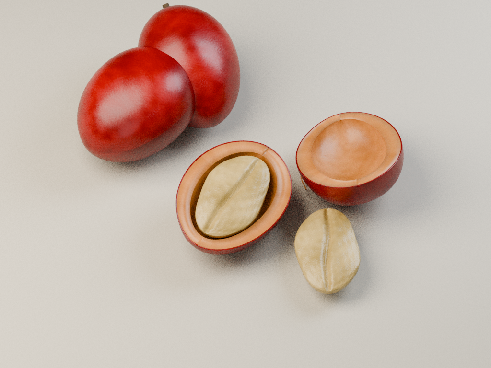

MATERIAL STUDY / 02
咖啡豆，藏在果实里。
从成熟红果，看到果肉与里面的种子。
这是完整旅程的新材料样板，清洗、干燥与后续制作已接入完整旅程。
成熟咖啡果 · 结构拆解示意离线渲染 · 新建模

多数咖啡果含两粒种子。这张拆解图把其中一粒移到旁边，方便看清形状；种子仍带着浅色保护层。实际水洗处理后，还要带壳干燥，再脱壳成为生豆。
这张图说明什么
- 我们饮用的咖啡来自种子，刚采收的果实并不是棕色熟豆。
- 这是按果实结构新建模的教学图，非实物扫描，也不是实时网页截图。层次做了便于观察的拆解。
- 结构参考：NCA 咖啡果结构；实物参考采用 CC0 开果照片。模型与材质为本项目制作，环境光来自 Poly Haven 的 Comfy Café（CC0）。